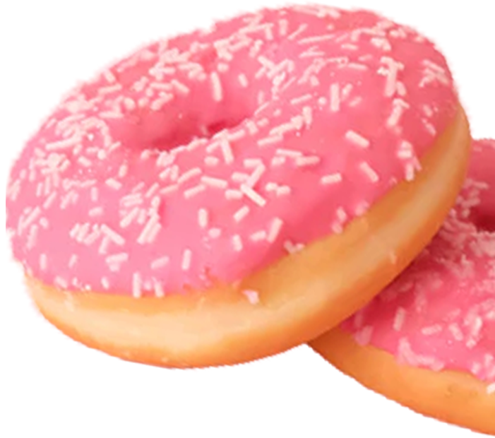
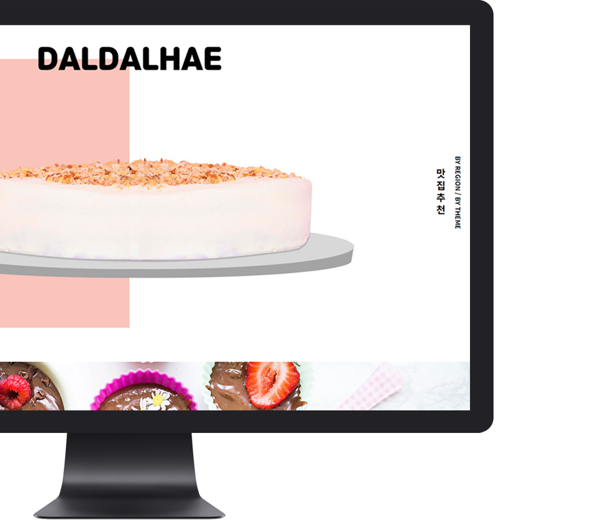
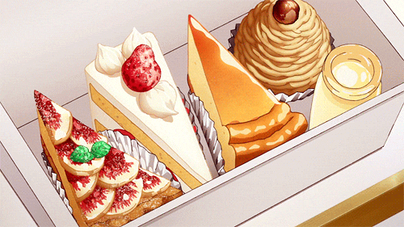
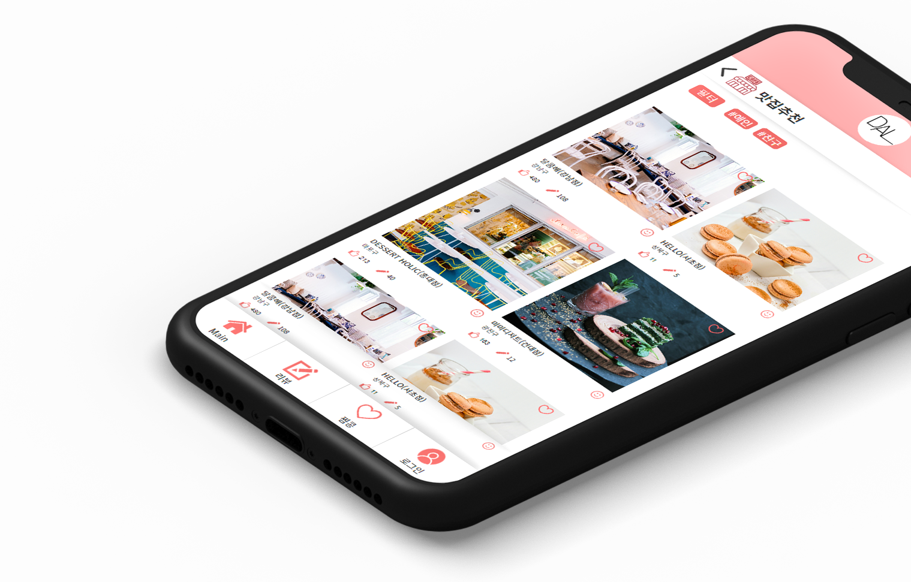

DalDalHae
chapter - 1
about
about
site
‘달달해’의 ‘달달(달콤함)’과 ‘해(해석하다)’ 라는 의미를 합쳐, 디저트를 좋아하는 모든 사람들에게 디저트에 관련된 정보를 알려주는 사이트입니다.
사이트의 큰 기능 두 가지는,
디저트들의 성분 및 칼로리의 정보를 제공하는 것과 디저트/카페 맛집들의 정보를 제공하는 것 입니다.


chapter - 2
mobile
PC뿐만 아니라 핸드폰으로도 이용할 수 있도록 모바일 코딩도 함께 하였습니다. 상단 로고는 항상 맨 위에
있을 수 있도록 고정하였고, 어느 페이지에 있든, 상단 로고를 클릭하면 메인 화면으로 돌아갈 수 있게 하였습니다.
하단의 메뉴들도 고정이며 모든 페이지에 들어가있고, 터치하면 해당 페이지로 이동할 수 있게 했습니다.
메인은 크게 성분분석과 맛집추천을 배치하여 사이트의 정체성을 살렸으며,
상세 페이지들은 그에 알맞는 기능들을 배치하였습니다.
모바일은 최대한 심플하게 보일 수 있도록 작업하였고, 사람들이 편하게 원하는 정보를
찾을 수 있도록 간단하고 필요한 기능들만 최소화 하여 작업하였습니다.

chapter - 3
design
PC에서는 디저트에 대한 사이트 답게 화려하고 맛있어보이는 사진들로 시선을 끌 수 있도록 디자인 하였고,
모바일에서는 귀여운 아이콘들과 단색으로 아기자기한 느낌과 더불어 한 눈에 보기 쉽도록 디자인 하였습니다.
디저트를 분석해주고 소개해주는 사이트답게 메인 색상은 달콤한 느낌이 날 수 있게 난색중에서 무난하고
보기에도 예쁜 분홍계열로 정하게 되었습니다.
#fff
#fac4bb
#fddcd6
#ffadad
#f26c69
#373737